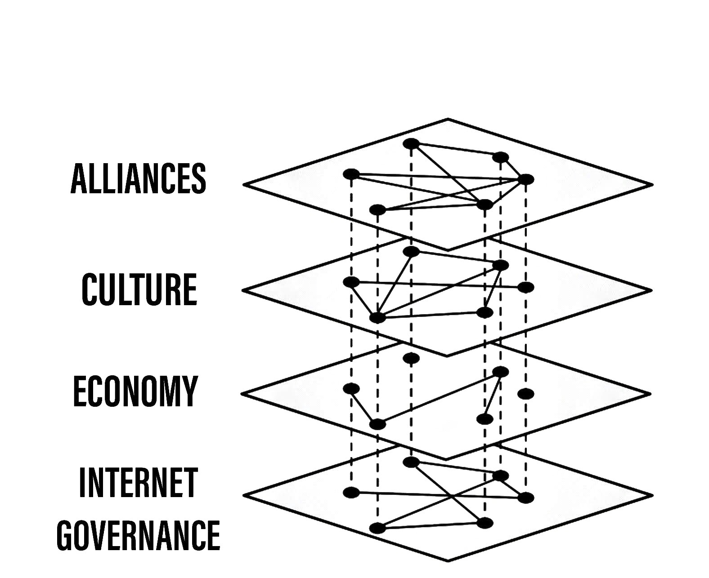

Website Blocking as a Proxy of Policy Alignment
by Nick Merrill and Steve Weber
Abstract
This work introduces a new metric of policy alignment between states: website blocking. Intuitively, we measure the degree to which states block similar content. This metric speaks to the flow of information in the digital layer of international politics, an element of international trade and cooperation that existing metrics fail to capture. In addition, our measure can be constantly scraped and updated, offering a higher temporal resolution than existing metrics. Our work suggests a link between Internet governance and other issues in international relations (e.g., trade). Since our metric can be updated in real time, future work could use our metric to detect geopolitical shifts more rapidly than would otherwise be possible.
Introduction
In international politics and political economy, the primitive unit of analysis is frequently the state. Early in the 1990s, popular rhetoric imagined that the Internet posed an intrinsic, perhaps even an insurmountable challenge to the power of states (Morrison, 2009). While the Internet has indeed challenged states to reconsider particular strategic aims (e.g., knowledge production, identity formation) (Rosenau and Singh, 2002), it is is increasingly evident as of this writing that the Internet has proven equally valuable as a vector for states to exert their power.
Today, cyberspace is a matter of "high politics;" it is a domain in which conflicts central to states' security play out. (p. Choucri and Clark, 2018, p. 4). How do states exert power in this domain? Broadly, institutions mediate and organize the Internet through various institutions: ISPs, regulators, and standards-setting bodies, not to mention corporations and end-users under legal jurisdiction. States use these institutions and jurisdictions to exert strategic control over the Internet. For example, China's government uses a multitude of technical decision-making bodies to gain long-term political and economic advantages (Ahmed and Weber, 2018; Bamman et al., 2012). The EU has used antitrust charges to check US-based Internet businesses (Satariano, 2020). More recently, the US has flirted with putting Chinese mobile phone apps under US juridiction, vaguely citing national security concerns (Byford, 2020).
In this work, we seek to understand how conflict and cooperation plays out in cyberspace using the notion of policy alignment. One of the important observations is how and when states “align” with each other. Do they support each other when it comes to conflict with a third party? Do they trade more than one would expect (e.g., from gravity models)? Since formal trade agreements (e.g., European Union) and formal alliances (e.g., NATO) only capture certain aspects of states’ alignment, researchers have looked for other measures of policy alignment to fill in the gaps.

Figure 1: Different metrics of policy alignment create connected graphs of countries. Our project adds a new topic area: the Internet.
Given two countries, policy alignment refers to the degree to which policies in those two countries are similar along some set of dimensions. Since a country's policy stance on any given set of issues is complex to the point of being unobservable in a measurable way, researchers use proxies of policy stances.
UN voting patterns provide an illustrative example. If two countries vote the same way in the UN, researchers can use this behavior as a proxy to assess policy alignment between those countries. UN votes do not carry much weight in practice, but if we assume that countries cast votes on the basis of their overall policy positions (i.e., rather than strategically, or symbolically) then countries that vote similarly are more likely to have similar policies than countries that vote differently (Bailey et al., 2017). Countries do not need to be actively collaborating (e.g., in formal agreements) to show policy alignment (although they might be). They may be voting the same way because of some underlying, driving causal factor (e.g., a shared ideology, or shared geopolitical goals).
Researchers use this notion of "alignment" as a predictive variable for other phenomena of interest, including but not limited to formal treaties and alliances. Two countries that have high policy alignment are more likely to support each other in a conflict with a third party, for example, than two countries with low policy alignment (De Mesquita, 1983).
Website blocking as a metric of policy alignment
The Internet has emerged as a key domain of conflict and cooperation between states. The way states (and other actors) govern in this shared domain is widely referred to as Internet governance. However, in its specifics, the term "Internet governance" has taken on a wide range of definitions. For our analysis, we follow (Hofmann et al., 2017), defining Internet governance as a "continuous heterogeneous process of ordering" the Internet, making room for both formal rule-making and emergent practices of users, providers and other stakeholders.
Measuring policy alignment in this domain is critical in understanding how exactly this conflict and cooperation plays out over time. However, no metric of policy alignment currently measures Internet governance across states. Given the heterogeneity of specific activities that constitute Internet governance (Hofmann et al., 2017), doing so with a single metric would likely elide some richness.
In this paper, we take an initial step toward measuring policy alignment in Internet governance by focusing specifically on webpage blocking. Broadly, website makes a particular URL unavailable in a particular country. In different countries, different sets of websites are unavailable, either by redirecting the website request, or simply dropping the request or its response. While the technical means for blocking websites are diverse (discussed below), the end result is that a user cannot access a webpage. Website blocking is typically enacted directly by governments, making it a fruitful first step toward quantifying alignment in the Internet governance policies of states specifically.
We set out to use similarities in webpage blocking patterns to build a metric of policy alignment. If two countries block the similar content (more on what "similar" means later), we consider this alignment a proxy of policy alignment on Internet governance issues. These states may not have conferred with one another, but their blocking decision reveals a shared outlook or set of geopolitical goals.
Methods
From a technical standpoint, there are a variety of methods for blocking webpages. One option is to manipulate domain name system (DNS) messages in order to make websites appear unresolvable. Another option is to drop TCP handshake packages with particular destination IPs, effectively making IP addresses impossible to contact. A related option is to allow the TCP handshake to occur, but inject follow-up TCP packets that either break or supersede the legitimate response. Yet another option is to make a legal case to a particular service provider (for example, asking Facebook to block a page in a particular country). Governments may also pressure ISPs to shut down service for particular users, or shut down service altogether.
ICLab, a longitudinal corpus of website blocking events, seeks to deal with this diversity in blocking strategies (Niaki et al., 2020). It focuses on consistency in blocking measurements across countries and over time. As of this writing, the ICLab has collected twelve snapshots of blocking activity from January 2017 to September 2018. ICLab produced these snapshots by placing "vantage points," or Internet-connected devices, in countries around the world. The vantage points made an HTTP request to each URL from a predefined list. The responses that came back were stored and analyzed by the ICLab team to determine whether (and how) blocking occurred. (Niaki et al., 2020)
For our analysis, we combined these snapshots into a single dataset. Our concatenated dataset dataset mapped countries to URLs, allowing us to determine whether a given URL was marked as blocked in a country during any time in ICLab's January 2017 to September 2018 collection period. (See Appendix for the full dataset, along with all code used to generate it). In the following section, we report on three attempts to produce a metric of policy alignment from this dataset.
Attempt 1: Strict overlap
The simplest metric for policy overlap would be to measure exact overlaps in
blocked websites between countries. When two countries block the same url (e.g.,
example.abc/site/), we take that as a signal of policy alignment in our model.
To compute our metric, we first found the web pages that appear to be blocked in
each country, grouping by the ICLab data’s country column. This is
straightforward in principle, but in practice, yields minimal variation in the
data. Even countries with relatively high blocking in our dataset have no more
than five URLs in common. For most pairs of countries in our dataset, this method
yields no overlaps at all.
Attempt 2: Fuzzy overlap
To get around the lack of strict overlaps in website blocking, we next attempted
to measure "fuzzy" overlaps in blocking between countries by considering only
root domains. Consider the webpage facebook.com/some-page and the webpage
facebook.com/different-page. If Country A blocks the first and Country B
blocks the second, is that overlap? By our prior method, this would not count as
overlap. However, by this method, it would: they're both blocking the same root
domain (facebook.com). To achieve this, we performed the same steps as in
Experiment 1, but used the Python library tldextract to separate domains and
suffixes from site urls. We removed any duplicate domain-suffix pairs. However,
we still observe little overlap with this approach. For example, Turkey and
Russia have 121 and 340 blocking events in our dataset, respectively, but only
23 websites in common.
Attempt 3: Overlap in content of blocked webpages
Not only do the Experiment 1 and Experiment 2 methods produce minimal variation in the data, they also lose some important sources of variation: the themes of the content these two countries block. In some sense, this seems intuitively closer to the true source of variation we are seeking to measure. Two states may block different websites that are, in practical terms, “the same” in that both represent content that state is trying to exclude.
Here's an illustrative example: India blocks Facebook pages that advocate for Muslim rights, especially regarding issues around Rohingya Muslims in Myanmar (Facebook.com, 2020). While no other countries block Facebook pages to such a degree as India, other countries do block websites at the intersection of religion and political movements (Turkey, Saudi Arabia, Russia and more).
Thus, we set out to measure thematic overlaps in blocked content between
countries. Consider domain1.com and domain2.com. If they're both categorized
as "religious," and two countries block them, we would consider this an overlap.
While these categorizations necessarily lack granularity, it is common for
widely-used metrics such as “press freedom” (Borders, 2020) to
categorize content at an analogous level (see Limitations for a further
discussion on classification). In their own analysis of their toolkit, ICLab
settled on a similar technique, and used FortiGuard's URL categories to classify
websites' content (Niaki et al., 2020).
FortiGuard provides a “web filter” for corporations, allowing networks to block (for example) pornography or gambling sites. To make this service work, FortiGuard maintains a URL classification service, which returns a category for any given URL. FortiGuard maintains 87 different classifications (Fortiguard, 2020a). They tailor their categorization scheme toward corporate web policies; we return to the implications of this ontology, as well as alternative ontologies, in our discussion and limitations sections.
For each country, we take the FortiGuard classification of each URL. We are left with a set of classifications, which we can represent proportionally: we can represent the percentage each category contributes to the total set of a country’s blocked sites. One advantage of this method is that it is invariant to the number of blocked sites total, allowing comparisons between countries that block different numbers of sites.
As an example, see a Figure 2, in which we see the relative blocking activity of four countries that are all very differently situated in the international order. This selection of countries indicates that there is meaningful variation between countries in our dataset. Motivated by this variation, we devised a similarity metric by which we can compare any two countries.

Figure 2: Proportion of websites blocked in Turkey, Russia, India and South Korea across a subset of Fortiguard categories. (Our dataset contained 78 categories for each country; we display only a few here for demonstration). We observe that these different countries block websites of various categories in different proportions. There appears to be meaningful variation in the data across countries.
To compute this similarity metric, we interpret the percentage of websites blocked in each category as a set of coordinates in n-dimensional space (e.g., {10, 20, 30, 40} if there were four categories). We can then compute the distance between any two coordinates using the spatial cosine distance. We are left with a distance between 0 and 1, which we can subtract from 1 to represent closeness (rather than distance) and then interpret as a percentage. By this metric, the similarity between India and South Korea is 20.4%. Between Turkey and Russia—countries which had only two domains in common in Experiment 2—the similarity is 76.46%.
Our measure

Figure 3: Force-directed graph of similarities in our dataset.
First, our metric reveals a large cluster of countries that are mostly similar to one another. Most of the countries in our dataset, in fact, lie close together, forming one tight component of countries with mostly similar website blocking policies.
Second, our metric reveals the connectivity patterns of those countries that are not members of this connected cluster. Venezuela stands alone, blocking a unique mixture of reference content (13.9%), games (10.4%) and educational pages (11.9%). Saudi Arabia, South Korea, Turkey and Russia form another, looser cluster.
South Korea's presence in this cluster surprised us. However, sites categorized News and Media account for a similar proportion of blocked content in Saudi Arabia as they do in South Korea (10.1% and 12.4%, respectively), as do Advocacy Organizations (0.99% and 1.63%) and Newsgroups and Messageboard (1.2% and 2.6%).
In general, our metric captures significant differences between countries typically considered to have “closed” Internets. For example, China and India stand apart from both this loose, four-country cluster. China, which is popularly imagined to "export" its model of the Internet to its Belt & Road allies (Shahbaz, 2018), in fact has low similarity with such countries. It is relatively unique, 90% similar to Hong Kong. Otherwise, it shares notable similarities only with Lichtenstein, for which News and Media sites comprise 19.8% of blocked content (compared to 57.4% in China).
Figure 4: China's blocking patterns are relatively unique, sharing notable similarities only with Hong Kong and, to a lesser degree, with Lichtenstein.
Finally, our findings reveal that the majority of countries in our dataset are mostly similar; one large cluster dominates Internet policy by our metric's measure. A few websites demonstrate a moderate volume of blocking while retaining a degree of interoperability with this main block. Vietnam, Serbia, Singapore, Belize, Taiwan, Bulgaria, Ukraine and Hong Kong all surround the the perimeter of this main, interoperable Internet (Figure 3), retaining moderately high similarities with countries in the center. These "perimeter" countries indicate important variations in our dataset, perhaps signaling a dual risk and opportunity of deviating from the global Internet on one hand, and enforcing national sovereignty on the other.
The value of our findings is, as suggested earlier, dual. First, this work provides a new and more dynamic metric of alignment that supplements existing metrics. In this section, we examined our metric in this context. Second, our metric may complement other measures of international relations (e.g., of trade or of civil rights policy). The following section turns to this possibility. We compare our metric to existing metrics of alignment and ask to what degree our measurement is distinctive, and to what degree it overlaps with traditional domains of measurement in international relations.
Comparisons to other domains
How does Internet governance, as measured by the proxy of website blocking, relate to other domains in international relations? In this section, we evaluate the correlation of our metric to existing features of the international relations: trade alliances; military alliances; measures of personal and press freedom; and cultural and historical ties. We find that our metric is associated with many of these features. These correlations suggest that Internet governance decisions, at least as they relate to website blocking, are not sui generis: patterns of alignment in the digital domain are roughly similar to those in other, more familiar domains.
Trade alliances: European Union (EU)
The flow of information has long been analyzed from an international trade perspective. After World War II, the General Agreement on Tariffs and Trade (GATT) dealt only with the international trade of goods (Gallagher, 2005). However, international trade in services, defined as "anything that can be bought and sold but cannot be dropped on your foot" (Economist, 1985), grew dramatically in the late 20th century due to advances in telecommunications technologies (Braman, 1990). This growth in services trade motivated a new set of agreements, notably the General Agreement on Trade in Services (GATS) agreement in the World Trade Organization (WTO), which aimed to extend its trade system to deal with international flows of information (Gallagher, 2005).
Despite the primacy of international data flows in world trade, existing metrics struggle to capture specific barriers to international data flows, making their effect on trade (and trade's effect on these barriers) difficult to quantify.
International data flows are often described as both a cause and an effect of trade (Meltzer, 2015). As a cause, the Internet enables trade; countries have an incentive to converge on Internet governance policies, as doing so will lower trade barriers. As an effect, high levels of trade between two countries create interdependence between economies. This interdependence would become more expensive to sustain if Internet policies between these two countries were highly discrepant; thus, Internet governance policies converge. While real causal relationships are likely mixed, both causal pathways give us reason to suspect that trade relationships might correlate with shared Internet blocking policies.
As a case study, we looked to the European Union. We collected the similarity metrics between all pairs of EU countries (within-EU group), and between all pairs of EU- and non-EU countries (outside-EU group). We performed a Mann Whitney U-Test on the within-EU and outside-EU groups, which found that EU countries are more similar with one another (M=0.97) than they are with non-EU countries (M=0.89) group (U=99666, p<0.001).
We re-ran this test with EU countries that were and were not members of the Soviet bloc before the fall of the Soviet Union. “Western bloc” EU countries were more similar to one another (M=0.98) than to non-Western bloc countries, whether or not those countries are in the EU (0.93), (U=32701, p<0.001). However, we do not find evidence that former “Soviet bloc” countries in the EU were more similar to one another (M=0.97) than to non-Soviet bloc countries (again, regardless of whether those countries were in the EU) (M=0.93) (U=4327, p = 0.41).
Takeaways
We find that EU countries are overall more similar to one another than they are to the rest of the world. There are a few possible explanations for this observation. One explanation is that joining the EU causes "digital behavior" (as measured by website blocking) to converge. Another explanation is that countries are more likely to join an alliance when they are more culturally, legally and politically similar in the first place (see our analysis of cultural and historical ties, below, for further reflections on this point).
Surprisingly, however, former Soviet countries within the EU are not significantly more self-similar to one another than they are to the world at large. European Union countries that were NATO allies, however, were more similar to one another than to the world at large. What do we make of this discrepancy?
One explanation is that, while joining an alliance causes countries to converge on various policies, institutional structures internal to countries set limits on this convergence. On the Eastern side, our finding would seem to suggest that the "legacy of communism" arguments from the 1990s, which argued that newly-liberated former Warsaw Pact countries would carry institutional and cultural legacies from that past into their future political and economic alignments and practices in a a kind of political hysteresis (Nodia, 2000; Rose, 1998) is not visible in the digital layer.
Future work could also explore aspects of global trade outside of formal agreements. Non-tariff barriers to trade (Evenett, 2019) present one potential avenue. We would expect to find an inverse correlation between non-tariff barriers and our metric: two countries more open to trade should have similar blocking profiles.
Military alliances
Increasing concern about “cyberwar” makes it plain that many see the Internet as a key tool in military conflict. However, military alliances signal policy overlap even if no one fires a bullet. Military alliances signal that one country would be willing to fight for another; alliance signals a willingness to sacrifice a great deal for another actor, which in turn suggests policy alignment (De Mesquita, 1983).
Does shared digital policy around website blocking relate to shared military objectives? To evaluate this question, we started with the North Atlantic Treaty Organization (NATO), an intergovernmental military alliance between 30 North American and European countries. If digital-layer blocking policy is related to military objectives, we would expect NATO countries to be overall more similar by our measure to other NATO members than to non-NATO members.
We collected the similarity metrics between all pairs of NATO countries (within-NATO group), and between all pairs of NATO- and non-NATO countries (outside-NATO group). We performed a Mann Whitney U-Test on the two groups, and found the within-NATO (M=0.97) group had significantly higher similarity scores than the outside-NATO (M=0.90) group (U=93709, p<0.001).
We performed the same test with ASEAN countries (Indonesia, Thailand, Malaysia, Singapore, Philippines, Vietnam, Brunei, Cambodia, Myanmar, Laos). Although ASEAN countries have a higher overall similarity with one another (M=0.82) than with non-ASEAN countries (M=0.76), our Mann Whitney U-Test falls short of significance (U=814, p=0.084).
Takeaways
NATO countries are significantly more similar to one another in Internet blocking patterns than they are to non-NATO countries. It is interesting to note that we did not find this to be true for former Warsaw pact countries in our prior analysis (see our section on trade alliances, above). Together, these results imply that the "digital consequences" of NATO membership may be greater than the legacy effects of the Warsaw pact
Of course, this result does not necessarily indicate that NATO countries have similar Internet blocking policies because doing so serves their shared military objectives. Within-NATO scores could be higher due to other legal, historical and trade relationships between NATO countries. However, our result does provide some evidence that Internet policy is not entirely detached from military objectives.
At the same time, and in contrast to NATO countries, ASEAN countries are not significantly self-similar. This finding reinforces the view that ASEAN is a less coherent, less institutionally robust alliance than is NATO (Acharya, 2014).
Personal and press freedom
Reporters Without Borders’ World Press Freedom Index (Borders, 2020) quantifies the degree of freedom available to journalists in 180 countries. We find a moderate positive correlation between blocking similarity and media freedom rank, r(1483) = 0.38, p<0.001. Countries more similar to one another in press freedom ranking are also more similar to one another in Internet blocking patterns.
Freedom House’s Freedom in the World Index (House, 2020) quantifies the freedom of electoral processes, political participation, functioning of government, freedom of expression and association, rule of law, and personal autonomy around the world. We find a moderate positive correlation between similarity in World Press Freedom ranking and Internet blocking similarity, r(1483) = 0.45, p<0.001. The Freedom in the World index and the World Press Freedom indices are themselves highly positively correlated with one another, r(156) = 0.85, p<0.001.
Takeaways
The presence of a positive correlation between blocking similarities implies that changes to our Internet blocking metric could predict changes to press freedom and personal freedom in countries. If a country becomes more similar in its Internet blocking patterns to Sweden, its personal and press freedom rankings are liable to increase; as it becomes more similar to Russia, we can infer that its personal and press freedom rankings are decreasing. This prediction is purely correlative; our data do not present a causal claim in one direction or the other. That said, our metric promises a faster and cheaper-to-collect method than existing metrics used in the indices we mention.
At the same time, the fact that our metric does not relate more strongly to measures of personal and press freedom is itself telling. In other words, Internet blocking policy cannot be explained entirely by personal and press freedom alone. Future work should examine where specifically correlations between Internet blocking and press or personal freedom break down. What about Internet blocking cannot be explained by press freedom? Those studies could lead to both a more fine-grained metric of personal and press freedom, and potentially to a more fine-grained metric of website blocking.
Cultural and historical ties: Commonwealth countries
The correlations we have discussed so far have been suggestive of ties between website blocking policy and other domains, such as press freedom, trade and military alliance. However, in all cases, our findings are confounded somewhat by shared cultural history. Along with their trade alliance, countries in the EU share many legal, cultural and historical similarities. The same is true of NATO members and, to a degree, of countries with high press freedom.
To what degree can webite blocking policies be explained by cultural relationships—shared legal precedent and cultural norms? To examine this question, we analyzed Commonwealth countries, an association of 54 member states, nearly all former territories of the British Empire. This association represents a shared history of British colonialism, and correlates with various cultural factors including use of English language, representative governments and common law systems. Of course, these member countries are also quite diverse in GDP per capita and human development. However, if Internet blocking relates to historical norms around speech, we would expect Commonwealth countries to have more similar blocking patterns to one another than to non-Commonwealth countries.
We collected the similarity metrics between all pairs of Commonwealth countries (within-Commonwealth group), and between all pairs of Commonwealth- and non-Commonwealth countries (outside-Commonwealth group). We performed a Mann Whitney U-Test on the two groups, and failed to reject that null hypothesis the within-Commonwealth (M=0.89) group shared higher similarity scores than the outside-Commonwealth (M=0.89) group (U=9922, p=0.59).
Takeaways
Our finding implies that Commonwealth heritage is not reflected in website blocking. This throws into question the degree to which our previous findings—significant similarities between EU countries, NATO countries, or countries with high press or personal freedom—are explainable by cultural and historical relationships alone.
However, historical relationships are not the only proxy of shared cultural connection. Present-day cultural connections may be better measured through, for example, plane flights. We might expect countries with high Internet blocking similarities to have more airline flights between them. Future work could explore these and other relationships to determine how cultural, political and legal similarities may explain variance in Internet blocking patterns.
Conclusion
This work presents Internet blocking as a metric of policy alignment. It begins to represent policy in a domain not well-studied by other metrics of alignment: Internet governance.
Correlations between our metric and metrics from other domains strong remind us that digital layer does not float freely from political realities, nor does it undermine traditional patterns in international relations. Instead, it either reflects or reinforces these patterns; or, most likely, a bit of both. These correlations indicate opportunities for future work on trade, military agreements, and beyond to use our metric to deepen insights in their domains, and vice versa.
At the same time, our work demonstrates the value and relevance of Internet fragmentation to policymakers. Internet fragmentation is not simply a technical issue. Internet fragmentation, at least as measured by website blocking, appears to be entangled with other aspects of the global order.
As such, future work could attempt to assess the usefulness of this metric as a “leading indicator” of changes to international relations. Unlike other metrics of global trade, military alliance, or civil rights, we can measure Internet blocking continuously. As one country converges with others on website blocking patterns, we would expect those countries to be more likely to, for example, join a trade pact in the future. To name an example timely as of the time of this writing, imagine that the United States blocks the Chinese apps WeChat and TikTok, and the European Union does not follow suit. With that change, we could predict that the EU would be more likely to trade with China than would the US.
Similarly, our tool could be used to generate "what-if" scenarios. If policymakers are toying with blocking a particular website (consider the US's musings around blocking TikTok as of the time of this writing), our metric could indicate how this blocking event would change the structure of similarity relations globally.
In the future, we aim to develop our tool to be more comprehensive, covering multiple layers of the TCP/IP stack (Table 1). This metric, which covers website blocking alone, focuses on the "application" layer of DNS and HTTP. Our future work could explore fragmentation "lower down" the stack (e.g., at the protocol layer, where a transition from IPv4 to IPv6 plays out unevenly around the globe). Future work could also explore fragmentation "higher up" the stack, looking at laws that limit data flow or enforce Internet sovereignty (Bejtlich et al., 2015).
| Layer | Number | Our metric |
|---|---|---|
| Legal/social/human | Layer 5 | Data locality laws |
| Application | Layer 4 | Website blocking |
| Transport | Layer 3 | Network interference events |
| Network | Layer 2 | IPv4 to IPv6 transition |
| Link | Layer 1 | Physical infrastructure |
We also aim to collect data more frequently, updating our metric as continuously as possible (and archiving prior metrics). The Open Observatory of Network Interference (OONI) (Network Interference (OONI), 2020) collects Internet measurements continuously, including data about website blocking. These terabytes of data, collected second-to-second, could be used to detect sudden changes in blocking patterns. These changes could themselves act as harbingers of changes to the international order.
Appendix
Data, code and visualization
Our metric, and the code used to generate it, are available via GitHub. The code that powers our interactive visualizations are also accessible via GitHub.
Data cleaning
We had 12 datasets (.csv files) ranging from January 2017 to September 2018 which amounted to a total of 50,436,865 observations. Each observation represents a single GET request to a particular URL in a particular country at a particular time. These observations represent both blocked and not-blocked websites; they represent queries meant to discover if a website is blocked or not. Results are reported regardless of the test outcome. Since this data is from longitudinal study, our data set may contain multiple GET requests to the same website across different countries at different points of time.
We consider a website blocked when a website has any of ICLab’s blocking-related
features set to True (dns_all, censored_updated, block, packet_updated). This
permissive approach allows us to detect all types of blockings available to
ICLab. We count each such dataset as blocked. Over all observations in the
datastet, 232,348 are blocked, or 0.46% of the dataset.
Finally, we augment this dataset by adding the Fortiguard category for each website observed to be blocked in the dataset. After this process, we are left with 78 categories of website blocking across 55 countries.
Limitations
ICLab data
While ICLab does a good job at detecting when a website is blocked, there are a few limitations that hinder our ability to reliably decide if a given webpage is blocked or not.
First, particular websites may discriminate against VPN users. For example, Netflix blocks all known VPNs. This may make a website appear to be blocked when it really is not.
Second, while the United States does not block websites by interfering with network traffic, the United States does use its legal system to seize websites that violate US law. One prolific effort is Operation In Our Sites, managed by Immigration and Customs Enforcement (ICE). (Kopel, 2013). While this activity does constitute Internet censorship, it does not cause Internet fragmentation per se, as seized websites become equally unavailable worldwide. Future work should monitor US website seizing operations more closely.
Third, some VPN providers manipulate traffic themselves (sometimes injecting ads).
Fourth, lists of URLs to test are biased. What websites should one test for blocking? ICLab cobbles together numerous datasets from across the web, but some (especially the Citizen Lab lists) suffer from selection bias, as they're manually curated by activists with a particular political bent.
Fifth, vantage points can be difficult to set up in countries where blocking is rampant, and in countries with adversarial regimes. These points are typically set up by volunteers. For example, Iran and Syria have no volunteers for now, as the ICLab maintainers decided the political situation is too risky there. ICLab lost access to VPNs in Iran in May 2017 due to sanctions, resulting in missing data in that country. Missing data in that country makes there appear to be little blocking, when in fact website blocking may be much higher than we are measuring.
Sixth, countries could evade blocking detection. If a country can conceal its website blocking actions, how would we know they're doing it? This is a major source of epistemic risk: countries may be using secret or unknown mechanisms to achieve blocking in certain countries, or may be strategically avoiding blocking content to vantage points such as VPNs.
Seventh, TCP handshakes create some uncertainty as we cannot be sure whether the observations constitute actual interference. More data from more vantage points could resolve some of this ambiguity.
Eighth, governments may tailor their blocking strategies to particular users. ICLab's method of vantage points is unlikely to capture this sort of blocking; detecting personalized censorship would require end-users to install and run tests themselves. Of course, having end users request sensitive websites, even automatically, could put them at great personal risk. Those possibilities could be the subject of future work.
Finally, a more fundamental issue with ICLab data is that the blocking events in this dataset do not necessarily relate to government action. Individual websites, such as Netflix, can choose to block traffic originating from particular countries. We decided to include these cases of probable non-government blocking, as they still show a degree of Internet fragmentation—the degree to which the Internet is different across different countries.
Content categorization
FortiGuard does not capture the fine-grained thematic content of a website. FortiGuard classifies the Facebook BlackLivesMatter group as "social networking," (Fortiguard, 2020b) indicating that FortiGuard does not capture the subject matter of particular Facebook pages. FortiGuard’s bases their 87 categories on the user needs of their “three major groups of customers: enterprises, schools and homes/families” (Fortiguard, 2020a). It is unclear that these categories are a perfect fit for our usecase of measuring or detecting policies behind website blocking decisions.
However, a pervasive epistemological issue is that we don’t know what the right categories should be. The “ground truth” category for Black Lives Matter’s Facebook page, for example, is unclear. Is it “race”? “Politics”? These boundaries are even less clear for religious movements in Myanmar. Some categories straddle the religious and political, while FortiGuard’s given categories (e.g., “extremism,” “drug abuse”) embed their own politics. Future work could make alternative or complementary categories for webpages based on NLP, allowing us to uncover or induce multiple overlapping topics from webpages in our corpus rather than relying on the overly-simplistic, one-of-n classification of webpages.
Also, we can't be sure that governments (versus private companies) are really performing the website blocking we're detecting. It could very well be the case that renegade ISPs blocks content, or that individual sites refuse to serve particular countries (perhaps to cut down on fraud or avoid sanctions). While it's overwhelming likely that blocking is occurring with state support, the difficulty in knowing for sure adds some uncertainty to our use of these data as a proxy for policy.
False negatives
One epistemic issue in our dataset is possible false negatives. As an example of when this issue might crop up, consider China and India. China and india both have roughly the same number of observations (2597 vs 2921), but India has a much higher number of websites blocked (519 vs 47). There are a few possible explanations for this observation. One is that India blocks more frequently than China. However, other possible explanations point to issues of false negatives. Websites blocked in China may not appear on the lists used by ICLab. Alternatively, this difference in the number of blocked websites may be an artifact of the nature of blocking in China, which could focus more on content within apps then with specific URLs.
About the authors
Nick Merrill directs the Daylight Lab at the UC Berkeley Center for Long-Term Cybersecurity.
E-mail: ffff at berkeley dot edu
Steve Weber is a Professor at the School of Information at UC Berkeley, wher he directs the Center for Long-Term Cybersecurity.
E-mail: steven_weber at berkeley dot edu
Acknowledgements
We would like to thank Akhilesh Pandita for his data analysis and Lily Bhattacharjee for her work building the data visualizations. We would also like to thank First Monday reviewers for their helpful comments, which improved this paper a great deal.